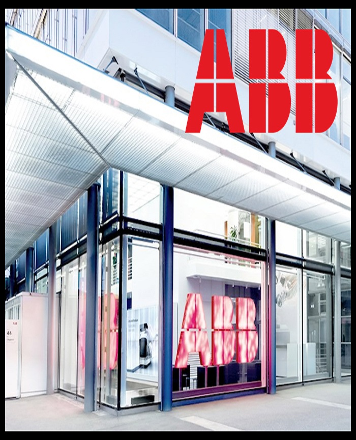

<!DOCTYPE html>
<html>
<body>
<head>
<title>WINSUPPLY</title>
<meta name="viewport" content="width=device-width height=device-height initial-scale=1">
<meta content="text/html; charset=iso-8859-2" http-equiv="Content-Type">
<link rel="stylesheet" href="https://www.w3schools.com/w3css/4/w3.css">
<style>
.mySlides {display: none;}
</style>
</head>

<h2 class="w3-center"></h2>

<div class="w3-content w3-display-bottomright w3-mobile w3-section w3-padding-large" style="width:35%">
  
  
  
  
  
  
  
  
  
  
</div>
Body {border-style: outset;border-width: 20px;border-color: dodgerblue; Z-index: 5;}
<script>
var myIndex = 0;
carousel();

function carousel() {
  var i;
  var x = document.getElementsByClassName("mySlides");
  for (i = 0; i < x.length; i++) {
    x[i].style.display = "none";  
  }
  myIndex++;
  if (myIndex > x.length) {myIndex = 1}    
  x[myIndex-1].style.display = "block";  
  setTimeout(carousel, 20000); // Change image every 20 seconds
}
</script>
</style>
<h1></h1>

<p></p>


<div><iframe width="1200" height="810"
src="https://www.youtube.com/embed/D3sJXA10obw?autoplay=1&loop=1&rel=0&playlist=esIncs6Z5bQ,n72WXbvYb1I,H2L5aopgKdg,
-iBucjcc9WQ,2L7Vmsq4JtQ,V7cqz51XnU4,AReDdLpgMvw,KP6NFiax2rk,B7F_WwIAscw,dAm9A3HqErU,3N2Plypn_Bg,uRln7XUGcZA,OZT61zm4kTw,hP7ql5Llfkw,
v4EXxBVMdUE,uNZiHNhT2-8,q6IYSctaAlc,ofCGS04AvoQ,gNT3OeuydDM,gQUPPXp5uf4,JjvQlnvFYPY,DpjS8Lqp3II,xfogNYtUG2o,ZRjt-fraF7I,GGJQ7d5eUGQ,URfnaJKeons,850aO98OAyI,KYFKwm47rO8,ywWl-mJwyAI,
7VKFA3hm-ls,OgADqC-8A84,0x43M5tJRak,YIhCHRTLpFY,m8j1hpmZrYQ,zbPv8OMWZbM,TqqC3IBusq4,pBbN8n34Qq8,XfPXWvVZeJI,gQUPPXp5uf4,Hg3oaotqTbE,cL0gcCckLjo,lBUT-1XhVS4,
I-n2DNawlrw,CWr12At_pEI,6rYRQW2UbrI,-qp5GUS-gss"></div>
</iframe>
</body>
</html>
</div>
